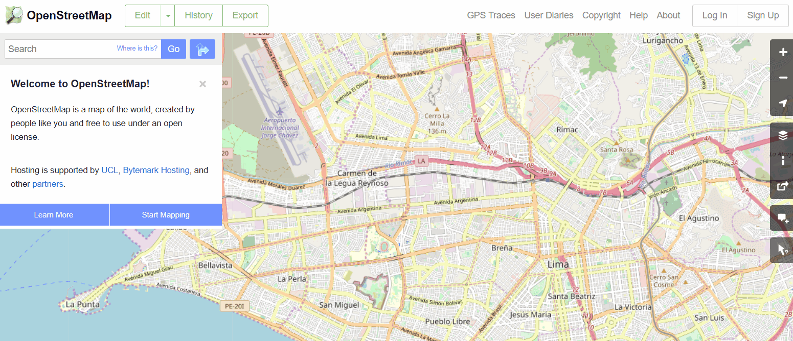
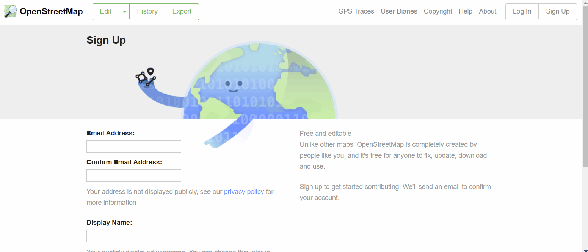
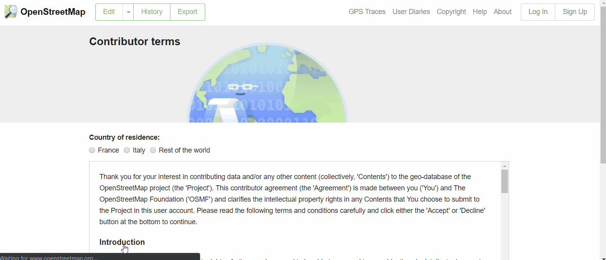
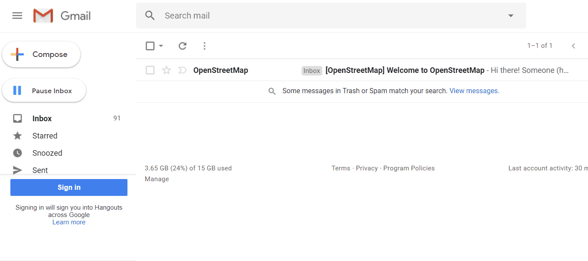

With OpenStreetMap (OSM) at the core of mapping activities, it is critical that all team members and participants have activated OSM accounts. This will be necessary before using many mapping tools such as HOT Tasking Manager, JOSM, and HOT Export Tool.
Skills and Technology Needed
- Computer
- Activated email account
- Internet connection
Creating an OSM Account
To get started, you will need to create an account on www.openstreetmap.org. Please use the “Sign Up” tab in the top right corner to begin.

Please fill in all the fields in the form. We recommend using an email you have easy access to e.g. your work email, as you will receive a confirmation email to verify your account. You will not receive any spam/marketing emails. Click the blue “Sign Up” button when finished.

Next, please read and accept the contributor terms and agreements by selecting where you are based (France, Germany, or the Rest of the World), and clicking the blue “Agree” button on the bottom of your screen.

To activate your account, please now check your email and click on the link provided.

Considerations for signing up large numbers of individuals
- Prior to beginning the OSM registration process, all individuals signing up for OSM accounts will need to have an existing and accessible email account. If registering a large group of individuals at one time, we recommend asking the group if they have accessible email accounts. When planning mapathons and trainings in areas where regular email use may be low, we also recommend planning for time in assisting individuals with setting up email accounts.
- Consider internet connectivity and capacity prior to registering large numbers of individuals for OSM accounts. Having individuals taking turns to register or running registration simultaneous to other activities can reduce the load on a slow internet connection.
- It is crucial that usernames and passwords are remembered by participants so that they can access other tools that require OSM accounts to log-in. We recommend encouraging participants to find a way of safely storing this information for future reference.
Training Materials